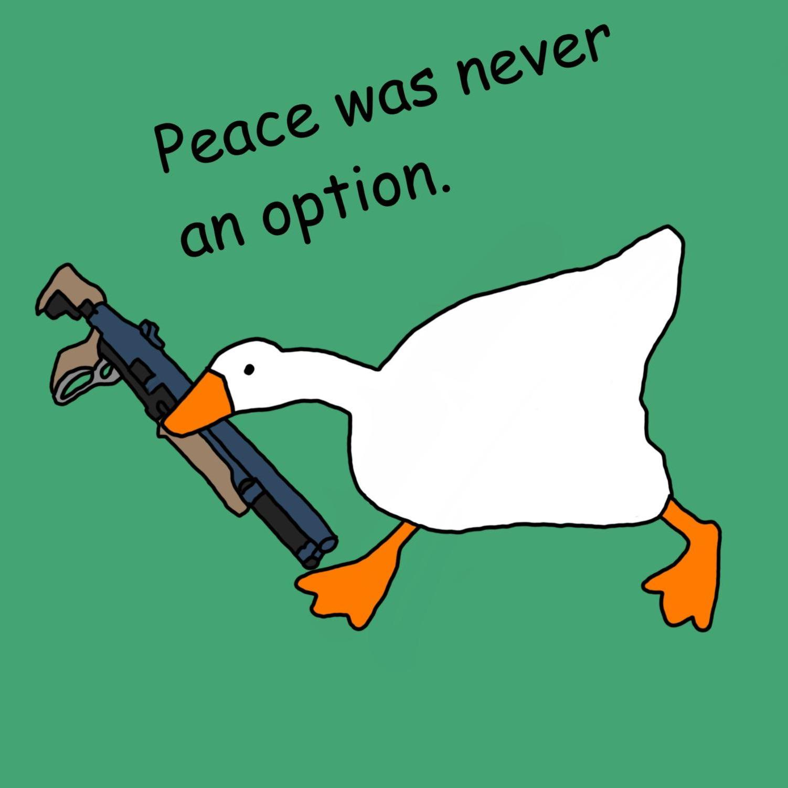

Table of Contents
First of all, I am not too fond of celebrating the new year. For a Virat Hindu (pun intended) like me, my new year is on the first day of Chaitra. But I do get invited to a New Year's Eve celebration every year and I take it gracefully.
As I am a person with a very short memory retention power, it is quintessential to write down how my year went or else I will forget it just like I have forgotten the previous twenty or so.
The process of foregtting has already begun and so this blog does not represent everything that has happened to me this year, it only has the things that I still remember.
So here I go, writing about what I went through this year, the lessons I learned, the Ws I snatched, the Ls I took, the changes I saw in myself in these 365 days, and finally what I want my 2024 to be like!
The experiences & the lessons learned:The best experience I’ve had this year was at NCC. I simply belong there. It provides me with a platform to meet some amazing people, fly planes, fire weapons, and serve the nation. Every time I step into that parade ground, I’m carrying a legacy with me.
The freshest experience I had this year was college. It took me 20 years to get there but honestly, it's worth it solely because of the freedom of self-improvement that I get there. After, three years of grinding, I can safely say it's worth it.
My first solo trip to Kolkata and my second solo trip to Prayagraj were such a refreshing experience as well. I was so overwhelmed with joy the moment Sealdah Rajdhani took off from NDLS.
Standing at this railway station, a thousand miles away from home with the task of finding food, shelter, and a companion for myself. I learned to survive alone and make friends impromptu.
The Goodies:I got a chance to visit Bihar after six years. That place is my motherland and every time I go there I come back motivated to do great in life so I don’t have to go back there.
I started to grow an online presence. It will take a lot of time and effort but I’m glad I’ve finally started using the internet for a good cause. I got rid of my Reddit/ib use as well.
I got my first phone gifted by my sister, my first TWS which I bought with my own money. It feels great buying books, snacks, accessories heck even a toffee when it's your money.
Getting my first internship was a great thing that happened this year. It taught me why not to do internships and stick to freelancing.
I got the chance to attend numerous events and all of them were amazing. Met new people, learned new things, and ate some amazing food. Also, I experienced a 5☆ hotel.
I started my liberation process; and created a personal site and a personal blog as well. I stuck to using free software and Linux.
My Failures:I failed JEE for the 3rd and 4th time. This was when I had given my 100% to the preparation. I’m just not made for meme exams I reckon.
I failed to retain academic knowledge. It’s like I remember nothing after an exam is over and the next time I have to start from the basics.
I missed all the opportunities to meet my old and true school friends. It’s been 1.5 years and I miss all of them a lot.
I failed to make it past the screening stage in two SSB interviews. The second time had me in tears. With no more attempts left, I have plenty of time to prepare before facing anymore.
Relationships:I lost my greatest companion, my truest love, LMAO. I cried a lot when he left us. I hope wherever he is, he is happy and free. I miss him a lot.
I’d say, the relation-building has been satisfying. From zero friends made last year to three this year, I’d say this is good progress. I made goal buddies and meaningful acquaintances as well.
Even for family relationships, it has been better. I talked with my uncles and older elders. The only bad thing is that I don’t have the privilege of my sister’s in-person company anymore.
How does 1 Jan 2023 Ayush compare to 1 Jan 2024 Ayush?:The most noticeable change is my looks. I lost more weight and transformed from a hairy bear to a short-haired, clean-shaven human being. I’d like to keep this look.
I care a lot less about what other people think about me now and that comes with being more bad-mouth with people.
2024?:I want to start investing. My money has been rotting in the bank for so long but no more. I will learn more about growing money and track my finances as well.
I want to run a marathon and attend as many camps as I can (if I don’t get kicked from NCC lol). Also, I want to stop this anxiety-shivering.
I want to buy a laptop, sticker bomb it with hundreds of stickers, and make a home server out of the Raspberry Pi 3.
Afterword:I believe that neither the journey nor the destination matters. The only thing that matters is the people with whom you were during that journey.
I’m grateful to everyone who invested even a blink of their time in me. It means a lot.
Thanks for Reading!
Have a Nice Day :)